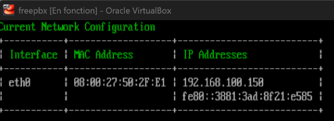
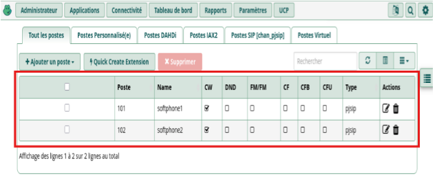
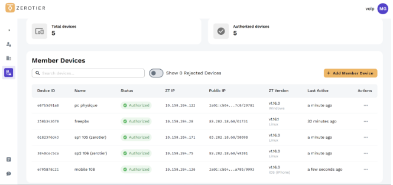

×
Déploiement d'une architecture VoIP / SD-WAN
Cliquez sur les images pour les agrandir.



Contexte : Projet de refonte pour la Maison des Ligues d'Île-de-France (MLIF) visant à déployer une infrastructure de téléphonie sur IP autonome, fonctionnelle et hybride.
- Déploiement Serveur IPBX : Installation d'un serveur sous SangomaOS (FreePBX / Asterisk) virtualisé pour la gestion des appels locaux, des messageries vocales et des groupes d'appels (Ring Group 600).
- Clients Softphones : Configuration des comptes SIP (PJSIP) sur les postes clients Debian via l'application Linphone.
- Réseau & Sécurité : Configuration d'un routeur Debian centralisant le routage inter-VLAN, le pare-feu NAT, le DHCP et le DNS BIND9.
- Mobilité & Accès Distant (BYOD) : Mise en place d'un réseau overlay (VPN Mesh ZeroTier) permettant aux smartphones et postes distants de rejoindre l'infrastructure téléphonique de manière chiffrée, sans ouverture de port.